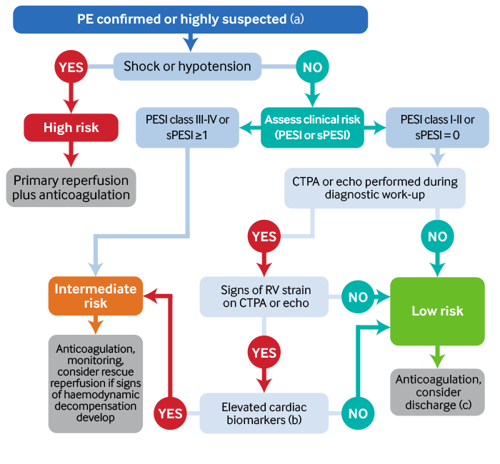

We use cookies to improve our service and to
tailor our content and advertising to you. You can manage your cookie settings via your browser at any time. To
learn more about how we use cookies, please see our
cookies policy
Assess for signs of shock or hypotension (ABCDE approach), which can indicate a
high-risk (massive/central) PE.
Seek senior support and escalate to critical care if suspected.
[ESC][ACP][NICE]
A high-risk PE is defined as a systolic blood pressure (SBP)
<90 mmHg or a SBP drop by ≥40 mmHg for >15 minutes, if not caused by
a new-onset arrhythmia, hypovolaemia, or sepsis. [ESC]
Signs of shock include altered cognition, cool extremities, mottled or
ashen skin, slow capillary refill, and oliguria.
If the patient is in peri-arrest/cardiac arrest and PE is suspected it is
common practice to give thrombolysis immediately without waiting for results of
investigations (based on discussion between senior clinicians).
Give intravenous fluids if SBP <90 mmHg or there are other signs of shock.
[ESC]
Give either normal saline or Hartmann’s; start with a 500 mL fluid
challenge.
Monitor for signs of heart failure. [ESC] The leading cause of death in
patients with high-risk PE is acute right ventricular (RV)failure with resulting
hypotension.
Ensure early respiratory support.
Titrate oxygen to 94% to 98% (or 88% to 92% in patients at risk of
hypercapnic respiratory failure).
Use mechanical ventilation if necessary. Beware that this can worsen hypotension so
monitor blood pressure closely. [ESC] [BTS02]
Arrange emergency primary reperfusion for any patient with shock or hypotension
(high-risk PE). [ESC] [ACP]
Systemic thrombolysis is the standard treatment of choice.
Do not allow supportive therapy to delay thrombolysis, which may quickly
restore haemodynamic stability.
Use vasoactive drugs if SBP remains <90 mmHg after thrombolysis and adequate fluid
resuscitation.
Give anticoagulation early if indicated. [NICE][ESC][ACP]
Check the patient has no contraindications to anticoagulation
You do not need to wait for the results of investigations to give
anticoagulation if PE is highly suspected.
Be aware of special cases such as pregnancy, renal impairment, and
active cancer as these groups will need a specific type/dose of anticoagulant.
Key Recommendations

‘Highly suspected’ PE includes all patients with either a positive D-dimer or Wells score
>4, or haemodynamically stable patients with evidence of RV dysfunction on
echocardiography.
Cardiac biomarkers include high sensitivity troponin (I or T), BNP, or NT-proBNP.
Use clinical exclusion criteria in combination with PESI/sPESI when making a decision
regarding discharge.
Initial supportive treatment for haemodynamically unstable
(high-risk) PE [ESC][BTSO2]
Ensure early respiratory support. Titrate oxygen to 94% to 98% (or 88%
to 92% for patients at risk of hypercapnic failure).
Use mechanical ventilation if necessary but monitor blood pressure closely.
If the patient is in peri-arrest or cardiac arrest and PE is suspected it is
common practice to give thrombolysis without waiting for results of
investigations.
This decision will be made by senior clinicians.
If SBP <90 mmHg or there are other signs of shock, use intravenous
fluids; start with a 500 mL fluid challenge.
Some studies indicate that aggressive volume expansion is of no benefit and may
even worsen RV function so monitor for signs of heart failure. [ESC]
Do not allow supportive therapy to delay thrombolysis in high-risk PE (as
long as there are no contraindications) as this may quickly restore haemodynamic stability.
Further acute management of haemodynamically unstable (high-risk)
patients [ESC][ACP]
Seek senior support when managing any patient who is haemodynamically unstable
and has had PE either
confirmed on CTPA or
highly suspected (unequivocal signs of RV dysfunction on echocardiography) .
Ensure all such patients receive both anticoagulation and thrombolysis (unless
contraindicated) as follows:
Anticoagulation with unfractionated heparin (UFH) initially, provided there are no
contraindications. This should be started prior to primary reperfusion.
Continue anticoagulation with UFH for several hours after the end of
thrombolysis before switching to a low molecular weight heparin (LMWH; e.g.,
dalteparin, enoxaparin), fondaparinux, apixaban, or rivaroxaban.
[ESC] AND
Thrombolysis (if there are no contraindications).
Select an accelerated thrombolysis regimen, administered over 2 hours.
In practice, almost any contraindication should be considered only relative
in haemodynamically unstable patients with PE because the high mortality risk
is likely to outweigh any bleeding risk.
If the patient continues to deteriorate despite thrombolysis (or if
thrombolysis is absolutely contraindicated after discussion with haematology),
consider surgical embolectomy or percutaneous catheter-directed therapy
(depending on local expertise and availability).
Give a vasoactive drug if SBP remains <90 mmHg despite adequate
intravenous fluids and thrombolysis.[ESC]
Acute phase anticoagulation in haemodynamically stable patients
Give anticoagulation to all of the following groups unless
contraindicated:[NICE][ESC]
Patients with confirmed PE either on CTPA or echocardiography.
Patients who present with suspected PE and have either a positive D-dimer or a
Wells score >4. If PE is subsequently excluded, anticoagulation should be
discontinued
Decide on the type of anticoagulant based on a patient’s comorbidities and
contraindications as well as taking into account local
guidelines.
LMWH, rivaroxaban, apixaban, or fondaparinux are all options. Dabigatran
and edoxaban are not recommended as the initial anticoagulant in these patients because
they require lead-in therapy with a parenteral anticoagulant first.
Be aware of special patient groups such as pregnancy, renal impairment, and
active cancer as these groups will need a specific type/dose of anticoagulant.
Consult a haematologist if a patient has a contraindication to
anticoagulation. Many of these patients, even those with apparent absolute
contraindications, may still be able to have a different or altered dose of an
anticoagulant.
Risk stratification
Risk stratify haemodynamically stable patients using the PESI or sPESI score
(the full Pulmonary Embolism Severity Index score, or its simplified sPESI
version).[BTS] [ESC]
Monitor any intermediate-risk patient (PESI ≥III or sPESI ≥1) closely for
signs of cardiopulmonary deterioration. Consider primary reperfusion (rescue
thrombolysis) if a patient in this group shows signs of deterioration or their SBP falls
to <90 mmHg.
Consider low-risk patients (PESI I or II, or sPESI 0) for early
discharge.
PE does not need to be confirmed on CTPA prior to discharge but it should be
performed within 24 hours (if available) [BTS]
Assessment of RV size/function on CTPA or echocardiography is not obligatory
for the identification of low-risk patients for outpatient management [BTS].
Consider measuring cardiac biomarkers (high sensitivity troponin, BNP or NT-proBNP)
in patients who have evidence of RV dysfunction on CTPA/echo if performed during
diagnostic work-up and who are suitable for outpatient management. If these are
normal they can be considered for discharge. If they are elevated they should be
admitted for observation. [BTS]
Do not use risk stratification scores for haemodynamically unstable
patients.
Treat any such patient as high-risk.
Do not use PESI/sPESI scoring in pregnant women.
Ongoing anticoagulation post-PE
The standard duration of anticoagulation should cover at least 3
months.[ESC][NICE]
Longer-term, or sometimes indefinite, anticoagulation may be needed for secondary
prevention after weighing the individual patient’s risk of recurrence versus
bleeding risk.
Select either a direct-acting oral anticoagulant (DOAC) or warfarin (a vitamin K
antagonist) according to the patient’s characteristics and preferences
If a DOAC is chosen:[ESC][NICEAC]
Rivaroxaban or apixaban can be continued if started during the acute phase.
Dabigatran or edoxaban require lead-in therapy with a parenteral anticoagulant for
at least 5 days before starting treatment with them. The parenteral anticoagulant
should be stopped before starting dabigatran or edoxaban.
If warfarin is chosen, it should be overlapped with a parenteral anticoagulant for at
least 5 days or until the INR is ≥2 for at least 24 hours (whichever is the
longer).[NICE]
Some patients may continue on LMWH or fondaparinux rather than switching to an oral
anticoagulant (e.g., patients with active cancer, pregnant women).
Anticoagulation can usually be stopped after 3 months following a provoked PE. [NICE]
[ESC]
A provoked PE is one associated with a reversible or transient risk factor that was
present in the prior 3 months (e.g. surgery, trauma, immobility, pregnancy, use of oral
contraception or hormone replacement therapy)
Anticoagulation is typically continued for >3 months after an unprovoked PE.
[NICE] [ESC]
Provide supportive treatment and give early reperfusion therapy
to any patient who is haemodynamically unstable (usually
thrombolysis,but in rare cases may be surgical embolectomy/percutaneous
catheter-directed therapy).
Ensure anticoagulation is given early to any patient with either
confirmed or highly clinically suspected PE.
Risk stratify haemodynamically stable patients and plan ongoing
management based on PESI/sPESI score.
Identify underlying risk factors that have provoked the PE
Supportive therapy in haemodynamically unstable (high-risk) patients
Patients with suspected or confirmed PE who present with shock or hypotension are at
high risk of in-hospital death, particularly in the first few
hours after presentation. [ESC]
Seek immediate senior input and escalate to the critical care
team.
Do not allow supportive therapy to delay thrombolysis in these
patients (as long as there are no contraindications) - thrombolysis may quickly restore
haemodynamic stability.
It is common practice to give thrombolysis as first-line treatment for any patient
who is in peri-arrest /cardiac arrest based on clinical suspicion of PE without
waiting for results from investigations.
In these situations the decision to thrombolyse would be based on discussion
between senior clinicians.
The 30-day mortality rate of patients with haemodynamically unstable
(high-risk) PE ranges from 16 to 25% and that of patients with cardiac arrest
due to PE ranges from 52 to 65%. [TANABE][KASPER]
Most deaths in patients presenting with shock occur within the first hour
after presentation so rapid therapeutic action is essential to save lives.
[HENRY]
The International Cooperative Pulmonary Embolism Registry (ICOPER) showed
90-day mortality rates of 58.3% in patients with high-risk (massive) PE.
[GOLD]
The vast majority of patients with PE present without cardiogenic shock
and with normal or only mildly reduced blood pressure.
These patients have an overall 30-day mortality rate of about 6% and are
considered as non-high-risk patients. [BOVA]
In these patients, right heart strain on echocardiography or evidence of
myocardial injury has been shown to be associated with an increased risk of
clinical deterioration and/or short-term death. Other factors, such as an
elevated troponin (indicating cardiac ischemia), altered mental status, and
the presence of comorbidities have also been correlated with early clinical
deterioration and higher risk of short-term death. [TRINQUART] [BECATTINI]
In a meta-analysis of six studies involving 2874 haemodynamically stable
patients with PE and evidence of myocardial injury and/or RV dysfunction,
follow up at 30 days showed PE-related death in 90 patients, haemodynamic
collapse in 122 patients and nonfatal symptomatic recurrent PE in 18
patients. [DAVID]
An analysis of 298 consecutive patients with low-risk PE (haemodynamically
stable, no rise in cardiac markers and no evidence of RV dysfunction) found
that that around two-thirds suffered no clinical deterioration. [PRUCNAL]
Oxygen
Give high-concentration oxygen, targeting a saturation of 94% to 98% (or 88% to 92%
in any patient at risk of hypercapnic respiratory failure).[BTS02]
Assess oxygen saturation early. Hypoxaemia is a typical finding in PE.
[ESC] The patient may be hypoxic at rest if a high-risk (massive) PE is present or only on
exertion with a smaller PE.
Apply mechanical ventilation if required but use with caution as this
may worsen haemodynamic instability in a high-risk (massive) PE. Mechanical ventilation
induces positive thoracic pressure which may reduce venous return and worsen right
ventricular (RV) failure. [ESC]
Fluid resuscitation
Give intravenous fluids if SBP is <90 mmHg or there are any other signs of
shock. [ESC]
Give intravenous fluids with caution and start with a 500
mL fluid challenge. Determine further fluid based on clinical response. [ESC]
Use normal saline (0.9% NaCl) or
Hartmann’s/Ringer’slactate.[NICEF] Guidelines
differ in their recommendations on choice of fluid and clinical practice varies widely so
check local protocols.
Monitor closely for signs of right heart failure. [ESC]
The leading cause of death in patients with high-risk (massive) PE is
acute right ventricular failure with resulting hypotension. [ESC]
Patients with haemodynamically unstable PE require early intravenous fluid resuscitation
but should be monitored for signs of right heart failure.
There is only very scarce and conflicting evidence on the balance of
risks versus benefits from fluid resuscitation in patients with PE who are
haemodynamically unstable.
One prospective study of 13 patients with high-risk haemodynamically
unstable PE suggested that fluid loading (an infusion of 500 mL of dextran
40 over 20 minutes) can improve hemodynamic status. It was shown to
increase right ventricular preload which was associated with an increase in
cardiac index without reducing the right ventricular ejection fraction.
[MERCAT]
In contrast, earlier experimental studies in dogs indicated that
aggressive volume expansion may be of no benefit and may even worsen RV
function. They found that when pulmonary vascular resistance was normal,
volume expansion increased stroke volume (SV) and mean blood pressure
whereas when RV afterload was increased, this volume expansion resulted in
RV failure. [GIRLING][TYBERG].
The 2014 ESC guideline states that evidence to date indicates that
aggressive volume expansion is of no benefit and may even worsen RV
function. [ESC]
Anticoagulation
Give anticoagulation to all of the following patients (unless
contraindicated): [ESC][ACP][NICE]
Those with PE confirmed either on CTPA or echocardiography.
Those who present with high clinical probability of PE, based on either a
positive D-dimer or a Wells score >4. If PE is subsequently excluded,
anticoagulation should be discontinued.
Anticoagulation is recommended in acute PE to reduce the risk of early death and
prevent recurrent symptomatic or fatal VTE. [ESC]
In patients who are haemodynamically unstable, evidence of RV
dysfunction on echocardiography is sufficient to warrant immediate anticoagulation and
thrombolysis.
These patients are normally too unstable to undergo CTPA.
The management of subsegmental PE remains controversial
Practice varies but surveillance rather than anticoagulation is considered the best option for most patients. [ESC]
The decision over whether to anticoagulate subsegmental PE (SSPE) remains controversial and practice varies widely. Seek specialist advice.
Increasing use of CTPA has increased the number of patients diagnosed with SSPE without any change in mortality rates, suggesting these PEs may not be clinically relevant. [BOONE][BRODER][SOJ]
There may also be overdiagnosis of SSPE. Evidence shows low clinical agreement between radiologists when diagnosing patients with small distal clots as they are subtle and hard to distinguish from artefact. [FRIER]
European guidelines suggest weighing up clinical probability against the bleeding risk but recommend surveillance rather than anticoagulation for patients who have no proximal DVT and have a low risk of recurrent VTE. [CHEST][ESC]
Evidence on outcomes in patients who are diagnosed with SSPE is scarce and is based on small numbers of patients, making it difficult to formulate evidence-based guidance.
Some studies have shown that anticoagulation may be of no clinical benefit. One meta-analysis examined 750 patients with SSPE, of whom 81% were treated with anticoagulation. Over 90 days there was no difference in mortality or recurrence of PE between those who did and did not receive anticoagulation but 8% of treated patients had an episode of bleeding. [JEFF] In an observational study, 15% (82 patients) of PEs found on CTPA were SSPEs. Around half of these patients were anticoagulated, and 2 developed life-threatening bleeding. No patient had an identified recurrent PE, whether or not they were anticoagulated. [GOY] The risk of recurrence of VTE in patients with SSPE without a concurrent DVT has been found to be insignificant in retrospective studies. [SOJ] [HULL]
On the other hand, a retrospective study of over 3000 patients showed that the rate of recurrence of PE during anticoagulant therapy was the same in patients with SSPE and those with larger PE (ie. segmental or lobar). It also showed that VTE recurrence was higher with SSPE than in those in whom PE was excluded. [KLOK]
Contraindications to anticoagulation
Consult a haematologist if a patient has a contraindication to anticoagulation.
Many patients with relative contraindications will still be able to have a different choice or altered dose of anticoagulation but a specialist opinion is needed to weigh up the benefit-risk balance.
Absolute contraindications are rare but include: [HOR]
active bleeding
recent intracranial hemorrhage
recent, planned, or emergent surgery or procedure with high bleeding risk
platelet count <50,000/uL
severe bleeding diathesis.
Relative contraindications include: [HOR]
recurrent but inactive gastrointestinal bleeding
intracranial or spinal tumor
recent, planned, or emergent surgery or procedure with intermediate bleeding risk
major trauma including cardiopulmonary resuscitation
aortic dissection
platelet count <150,000/uL
Remember too that each anticoagulant may have its own specific relative and absolute contraindications (e.g., heparin is contraindicated in patients with a history of heparin-induced thrombocytopenia), and these should be checked before starting treatment.
Peptic ulcer disease with no history of bleeding or faecal occult blood is not a contraindication to anticoagulation.[HOR]
Anticoagulation is safe in most trauma and neurosurgical patients after the first or second postoperative week and in most stroke patients without haemorrhage. [HOR]
Patients with spinal cord injury without haematomyelia may still be considered for anticoagulation [HOR]
Types of anticoagulation
Base your choice of anticoagulant on the patient’s comorbidities and contraindications as well as taking account of local guidelines. [NICE]
Acute phase anticoagulation
Haemodynamically unstable (high-risk) PE
For patients with PE and haemodynamic instability (SBP <90 mmHg or SBP drop of ≥40 mm Hg for >15 minutes), use UFH.
UFH has a short half-life, is easy to monitor, and is readily reversed by protamine. [ESC]
Start anticoagulation with UFH prior to primary reperfusion with thrombolysis (or in rare cases surgical embolectomy/catheter-directed therapy).
Continue anticoagulation with UFH for several hours after the end of thrombolysis before switching to LMWH, fondaparinux, apixaban, or rivaroxaban. [ESC] In the UK it is common practice to stop UFH within 24 hours.
If switching to LMWH or fondaparinux, the total duration of treatment with UFH and then LMWH or fondaparinux should be at least 5 days. [NICE][ESC]
If ongoing anticoagulation will be with warfarin, ensure overlap with UFH, LMWH, or fondaparinux for at least 5 days or until the INR is ≥2 for at least 24 hours (whichever is the longer).[NICE] Seek specialist advice to decide when to start warfarin.
OR
If ongoing anticoagulation will be with edoxaban or dabigatran, at least 5 days of lead-in therapy with LMWH or fondaparinux is required first. Stop the LMWH or fondaparinux before starting dabigatran or edoxaban.[BTS]
If switching to rivaroxaban or apixaban, these drugs may be started after stopping UFH without the need for lead-in therapy with LMWH or fondaparinux first.
Acute-phase treatment consists of an increased dose of the oral anticoagulant over the first 3 weeks (for rivaroxaban), or over the first 7 days (for apixaban).
Seek specialist advice when switching between anticoagulants
The protocol depends on which anticoagulant you are switching to and from. Haematology input is important.
Be aware of special patient groups such as pregnancy, renal impairment, and active cancer as these groups will need a specific type/dose of anticoagulant. Seek haematology advice for all patients with hepatic impairment or who are at increased risk of bleeding.
Browse the best online HTML tools: editor, tags, cheat sheet, character codes, tag generators, website templates and more.
There is some evidence that LMWH has a similar safety profile to UFH when used prior to thrombolysis.
A prospective, observational multicentre trial showed similar bleeding rates following thrombolysis in patients who had UFH or LMWH. However this evidence remains limited.
There is not enough evidence to recommend LMWH as a first-line option for patients with PE who are haemodynamically unstable. [UCAR]
Haemodynamically stable PE (with the exception of special cases)
Start initial anticoagulation as soon as possible with any one of the following:LMWH, fondaparinux, apixaban, or rivaroxaban.
If using LMWH or fondaparinux, continue treatment for at least 5 days.[NICE][ESC]
If ongoing anticoagulation will be with warfarin, start warfarin within 24 hours of diagnosis and ensure overlap with LMWH or fondaparinux for at least 5 days or until the INR is ≥2 for at least 24 hours (whichever is the longer).[NICE] OR
If ongoing anticoagulation will be with edoxaban or dabigatran, at least 5 days of lead-in therapy with LMWH or fondaparinux is required first. Stop the LMWH or fondaparinux before starting dabigatran or edoxaban.[BTS]
If using rivaroxaban or apixaban, these drugs may be started without the need for lead-in therapy with a parenteral anticoagulant first.
Acute-phase treatment consists of an increased dose of the oral anticoagulant over the first 3 weeks (for rivaroxaban), or over the first 7 days (for apixaban).
The 2018 British Thoracic Society (BTS) guideline recommends using a single DOAC in patients being considered for outpatient management to minimise potential confusion over dosing and administration.[BTS]
DOACs have non-inferior efficacy and are possibly safer, particularly in terms of major bleeding, than the standard regimen of LMWH plus warfarin. [ESC] [BTS] [ADD CCA link]
Select a DOAC after discussion with the patient about which regimen would be most suited to them as well as taking into account the risks and benefits of each DOAC.
Never give a DOAC simultaneously with parenteral anticoagulation
While warfarin is started at the same time as a parenteral anticoagulant and overlapped for at least 5 days or until the INR is ≥2 for at least 24 hours (whichever is the longer), DOACs should never be overlapped or given at the same time as a parenteral anticoagulant.
Apixaban and rivaroxaban may be started without the need for lead-in therapy with a parenteral anticoagulant first. Either of these DOACs can be used as a single-drug approach; this is why BTS guidelines recommend them as the preferred DOAC options in any patient who might be suitable for early discharge. [BTS]
However, dabigatran and edoxaban require at least 5 days lead-in therapy with a parenteral anticoagulant before starting treatment. The parenteral anticoagulant should be stopped before dabigatran or edoxaban are started.
There is now strong evidence that DOACs are non-inferior and have a favourable safety profile for management of PE when compared to either LMWH/warfarin or fondaparinux. [BTS]
Results of the major trials using DOACs in the treatment of VTE indicate that these agents are non-inferior (in terms of efficacy) and possibly safer (particularly in terms of major bleeding) than the standard heparin/warfarin regimen. [WELLS][ESC][GALLUS] [BRENNER] [COCHRANE] [LIB]
A Cochrane review concluded there was [CCA LINK AS ABOVE]
no difference between dabigatran and the standard regimen in preventing recurrent VTE (OR 1.02, 95% CI 0.50 to 2.04), recurrent VTE (OR 0.93, 95% CI 0.52 to 1.66) and DVT (OR 0.79, 95% CI 0.29 to 2.13) or in causing major bleeding (OR 0.50, 95% CI 0.15 to 1.68)
no difference between the factor Xa inhibitors (apixaban, rivaroxaban, edoxaban) compared to the standard regimen, in preventing recurrent VTE (OR 0.85, 95% CI 0.15 to 1.68), DVT (OR 0.72, 95% CI 0.39 to 1.32) and all-cause mortality (OR 1.16, 95% CI 0.59 to 1.62) or in causing major bleeding (OR 0.97, 95% CI 0.59 to 1.62).
High time in therapeutic range (TTR) values were achieved under warfarin treatment in all trials. On the other hand, the study populations included relatively young patients, very few of whom had cancer.
Experience with DOACs remains limited but they can be viewed as an alternative to standard treatment.
There are no trials that have directly compared different DOACs with each other, so it is difficult to determine which drug should be recommended as a first choice for most patients.
However, a systematic review, network meta-analysis, and cost effectiveness analysis has indirectly compared DOACs with each other for prevention of stroke in patients with atrial fibrillation. [ META]
The authors concluded that apixaban 5 mg twice daily has the highest expected incremental net benefit, followed by rivaroxaban 20 mg once daily, edoxaban 60 mg once daily, and dabigatran 150 mg twice daily. It should be emphasised that this analysis was looking at evidence relating to patients with atrial fibrillation on longer-term anticoagulation for stroke prevention. However the different risks/benefits of each anticoagulant can be taken into account when deciding which DOAC to use for a patient with PE. [META]
Reversal agents exist for dabigatran, apixaban, and rivaroxaban if patients develop serious bleeding or require surgery. There is no licensed reversal agent yet for edoxaban.
Idarucizumab is licensed to reverse the effect of dabigatran.
Results from an ongoing, uncontrolled, phase III, cohort study (RE‑VERSE AD) of 90 adults taking dabigatran who had either serious bleeding or required urgent surgery, showed that treatment with idarucizumab reversed the anticoagulant effect of dabigatran (median maximum reversal 100%) and normalised dilute thrombin time and ecarin clotting time in 88% to 98% of people.[NEJM]
Andexanet alfa (recombinant coagulation factor Xa) is licensed to reverse the effect of apixaban and rivaroxaban.
Andexanet alfa quickly reverses the anticlotting effects of factor Xa inhibitors, according to an industry-supported study published in the New England Journal of Medicine.
Researchers enrolled 350 adults who presented with acute major bleeding (e.g., intracranial, gastrointestinal) within 18 hours of receiving apixaban or rivaroxaban. Andexanet alfa rapidly reduced anti-factor Xa activity. For example, among patients who'd been receiving apixaban or rivaroxaban, the initial andexanet alfa bolus reduced anti-factor Xa activity by 92%. In addition, at 12 hours after the infusion, 82% of patients were deemed to have good or excellent haemostatic efficacy. [ANDEX]
Haemodynamically stable PE (special patient groups)
Pregnancy
Use a weight-adjusted dose of LMWH in women who are (or may be) pregnant. [ESC]
It does not cross the placenta, and routine monitoring is not generally required.
Several studies show that heparin is safe to use in pregnancy.
A systematic review and a meta-analysis of the literature was carried out to provide an estimate of the risk of bleeding complications and VTE recurrence in patients with acute VTE during pregnancy treated with either LMWH or UFH. Eighteen studies, giving a total of 981 pregnant patients with acute VTE, were included. It concluded that LMWH and UFH appears to be safe and effective for the treatment of pregnancy-related VTE, but the optimal dosing regimens remain uncertain. [RANCAN]
A case series of 33 women showed that the initial dose of enoxaparin provided satisfactory peak anti-Xa activity. No woman developed thrombocytopaenia, haemorrhagic complication or further thromboembolic episode. Fifteen women had regional anaesthesia for delivery, with a reduced dose of enoxaparin, all without complication. [RODIE]
In a retrospective observational study enoxaparin was administered for treatment of an acute episode in 49 cases and for thromboprophylaxis in 574 cases. Serious maternal haemorrhage occurred in 11 cases during pregnancy (1.8%), one being reasonably related to enoxaparin, and in nine cases at delivery (1.4%), all unrelated to enoxaparin. Maternal thrombocytopenia was reported in 10 cases (1.6%), two being serious but unrelated to enoxaparin. Eight pregnancies ended in stillbirth (1.1%). Among the 693 live births, 17 major congenital abnormalities (2.5%) and 10 serious neonatal haemorrhages (1.4%) were reported. None of the fetal or neonatal adverse events was related to enoxaparin. Eight venous thromboembolic events (1.3%) were reported.The incidence of adverse events reported could be explained by the high risk profile of the study population. Overall, this retrospective study suggests enoxaparin is well tolerated during pregnancy.[BJOG]
Avoid DOACs and warfarin during pregnancy as they may cross the placenta. [ESC]
Warfarin is associated with a well-defined embryopathy during the first trimester. Administration of warfarin in the third trimester can result in foetal and neonatal haemorrhage, as well as placental abruption. Warfarin may be associated with central nervous system anomalies throughout pregnancy. [ESC]
DOACs are not recommended because there is a lack of evidence of their safety in pregnancy as pregnant women were not included in trials.
However, warfarin, LMWH, and UFH are compatible with breastfeeding because they do not accumulate in breast milk and do not lead to anticoagulation in the infant. [ACOG]
Active cancer
Use LMWH in patients with active cancer [NICE] [ACP]
LMWH is more effective than warfarin in patients with cancer [LINK TO CCA]
It is also therapeutically reliable in patients for whom oral therapy may be inappropriate (e.g., vomiting), and is easier to adjust/withhold if thrombocytopenia develops or an invasive intervention is needed.[ACP]
Patients with cancer treated with warfarin may be difficult to maintain within the therapeutic range, and experience substantial rates of recurrence. [ACP]
Start the LMWH in the acute phase and continue it for 3-6 months. [NICE]
LMWH administered in the acute phase and continued over the first 3–6 months is the accepted first-line therapy in patients with cancer (except for high-risk PE). .
A Cochrane review that analysed seven RCTs comparing LMWH with warfarin (after acute-phase heparin) in patients with cancer found a significant reduction in the rate of recurrence of VTE (HR 0.47, 95% CI 0.32 to 0.71) without increased bleeding risk. However, there was no statistically significant reduction in overall mortality (HR 0.96, 95% CI 0.81 to 1.14). [AKL]
An earlier Cochrane review showed a significant reduction in mortality at three months of follow up with LMWH compared with UFH although it showed no statistically significant reduction in VTE recurrence. [MUTI]
There is some emerging evidence indicating DOACs may be as effective as LMWH.
A multicentre RCT compared rivaroxaban with dalteparin in 203 patients with active cancer who had symptomatic PE. It found rivaroxaban was associated with relatively low VTE recurrence but higher clinically relevant non-major bleeding compared with dalteparin. This is a rapidly evolving area with continuing developments in the evidence. [ASCO]
Evidence regarding treatment of cancer-related PE with fondaparinux is limited.
Severe renal impairment or established renal failure [NICE]
Seek advice from a haematologist for these patients. Among the options suggested by NICE for this patient group are:
LMWH with dose adjustments based on an anti-Xa assay.This should be overlapped with warfarin.[NICE]
OR
Rivaroxaban, edoxaban, and apixaban can be used with caution and at a reduced dose in patients with renal impairment.[NICETA287][TA354][TA341]
Warfarin is safe to use in patients with renal impairment with no dose adjustments necessary. However, monitor the INR more carefully in these patients.
Hepatic impairment
Seek haematology advice for all patients with hepatic impairment.
Patients with increased risk of bleeding
Seek advice from a haematologist for these patients. NICE suggests the following options:
Use UFH but consider consultation with a haematologist prior to starting treatment. UFH has a short half-life, is easy to monitor, and is readily reversed by protamine. [NICE]
Consider fondaparinux for patients with suspected or confirmed heparin-induced thrombocytopenia (HIT) as it appears to be effective in these patients and carries a low risk of inducing HIT. [NICE]
Recurrent PE
Seek advice from haematology for any patient who has a recurrent PE despite adequate anticoagulation treatment. Options may include: [ACCP]
Switching treatment to LMWH at least temporarily (for at least one month) if the patient was taking warfarin or a DOAC when the recurrent PE occurred.
OR
Increasing the dose of LMWH by one-quarter to one-third if the patient was already taking LMWH when the recurrent PE occurred. [ACCP]
Recurrent PE is unusual among patients receiving therapeutic-dose anticoagulation. [KEARON]
Check concordance with the anticoagulation regimen and consider the possibility of an underlying malignancy.
The risk for recurrent VTE after discontinuation of anticoagulation is related to the features of the first VTE event.
A study that followed patients with a first episode of acute PE found that the recurrence rate after discontinuation of treatment was approximately 2.5% per year after PE associated with reversible risk factors compared with 4.5% per year after unprovoked PE.[ZONZIN]
Similar observations were made in other prospective studies in patients with DVT.[LOOGNA]
Recurrence rates may be up to 10% in the first year after withdrawal of anticoagulant treatment.
For patients with provoked PE, anticoagulation for 3 months is preferable to a shorter period. Treatment for longer than 3 months is generally not recommended, provided that the transient risk factor no longer exists.[ESC][ZONZIN]
Primary reperfusion in patients with shock or hypotension
Emergency primary reperfusion is indicated for any haemodynamically unstable patient with: [ESC]
PE confirmed on CTPA
Suspected PE and unequivocal signs of RV dysfunction on echocardiography (if CTPA is not immediately available and/or the patient is too unwell to undergo CTPA).
Thrombolysis is the first-line intervention for most patients
Surgical embolectomy or catheter-directed therapy are alternatives. [ESC]
Thrombolysis
Ideally, PE should be confirmed by computed tomographic pulmonary angiography (CTPA) prior to thrombolysis. [BARCO] In practice, thrombolysis is typically started on clinical grounds if a high-risk PE is highly suspected and there is evidence of right ventricular dysfunction on echocardiography.
Administer thrombolysis (unless contraindicated) to any patient with SBP <90 mmHg or who has other signs of shock.
Systemic thrombolysis is associated with lower all-cause mortality in these patients when compared with UFH alone. [ESC] [CARDIO]
Give thrombolysis as soon as possible and certainly within 48 hours of symptom onset to ensure optimum benefit. [ESC]
Select an accelerated regimen administered over 2 hours.
These regimens are preferred to prolonged infusions over 12-24 hours. The European Society of Cardiology guideline lists alteplase, streptokinase, and urokinase as approved thrombolytics for acute PE. [ESC] Alteplase and higher-dose streptokinase are administered over 2 hours; whereas, lower-dose streptokinase and urokinase are administered over 12 to 24 hours.
Give a vasopressor such as adrenaline (epinephrine) or noradrenaline (norepinephrine), or an inotrope such as dobutamine if SBP remains <90 mmHg after thrombolysis[ESC]
In haemodynamically unstable patients, use of a vasopressor or an inotrope is often needed in parallel with reperfusion. [ESC]
Thrombolysis in the treatment of acute haemodynamically unstable PE has been shown to restore pulmonary perfusion more rapidly than anticoagulation with UFH alone.
An RCT of 36 patients concluded that use of alteplase, compared with heparin, resulted in a greater and faster improvement of angiographic and hemodynamic variables. However, the high frequency of bleeding observed with alteplase in this trial suggests that patients should be carefully selected before thrombolytic therapy is given. [PENGO]
Overall, >90% of patients appear to respond favourably to thrombolysis.
This was demonstrated in a prospective single-centre registry of 488 PE patients who underwent thrombolysis as judged by clinical and echocardiographic improvement within 36 hours. [BLONDE]
Among the minority of patients with high-risk PE who did not respond to thrombolysis, rescue surgical embolectomy led to lower mortality rates and fewer recurrent PEs when compared with repeat thrombolysis.
Thrombolysis has greatest benefit when given early after symptom onset.
An overview of 308 PE patients from 5 clinical trials who underwent thrombolysis for PE showed an inverse relation between duration of symptoms and improvement on post-treatment lung scan reperfusion scores. For each additional day of symptoms before thrombolysis, there was a decrease of 0.8% in lung tissue reperfusion. Similarly, on angiography, less clot lysis was observed immediately after thrombolysis in the group with the longest duration of symptoms compared with those with the shortest symptom duration.
However the authors concluded that thrombolysis may still have some benefit in patients who have had symptoms for 6 to 14 days. [AM]
Adrenaline combines the beneficial properties of noradrenaline (vasoconstriction with increased right ventricular perfusion, positive inotropy) and dobutamine (positive inotropy), but without the vasodilatory effects associated with the latter. [ESC]
A small prospective, descriptive study of patients with RV failure and shock demonstrated that during adrenaline infusion, mean arterial pressure (MAP), cardiac index (CI) and stroke volume index (SVI) were increased and right ventricular ejection fraction (RVEF) improved.
Another small study showed that adrenaline improved cardiac output in patients with shock without having a detrimental effect on pulmonary vascular resistance. [BARRINGTON]
Evidence suggests noradrenaline appears to improve RV function through its inotropic effect, as well as improving coronary perfusion by raising systemic pressure.
However, noradrenaline increases pulmonary vascular resistance and no conclusive data are available regarding its potential use in PE. [PREWITT]
The use of dobutamine (an inotrope) and/or dopamine may be considered for patients with PE, low cardiac index, and normal BP based on the results of some studies. [ESC]
Dobutamine enhances contractility with an increase in stroke volume and cardiac output. However, raising the cardiac index above physiological values may aggravate the ventilation–perfusion mismatch by further redistributing flow from (partly) obstructed to unobstructed vessels. [DIS][ESC]
Contraindications to thrombolysis
Seek haematology advice if a patient with high-risk PE who is haemodynamically unstable has any contraindications to thrombolysis. These are: [ESC]
Absolute contraindications:
haemorrhagic stroke or stroke of unknown origin at any time
ischaemic stroke in the preceding 6 months
central nervous system damage or neoplasms
recent major trauma/surgery/head injury (in the preceding 3 weeks)
gastrointestinal bleeding within the last month
known bleeding risk.
Relative contraindications:
transient ischaemic attack in the preceding 6 months
oral anticoagulant therapy
pregnancy or within 1 week postnatally
traumatic resuscitation (in relation to this episode of PE)
refractory hypertension (SBP >180 mmHg)
advanced liver disease
infective endocarditis
active peptic ulcer
In practice, almost any contraindication to thrombolysis should be considered only relative in high-risk patients who present with haemodynamic instability.
This is because the mortality risk from high-risk PE is so high that it is likely to outweigh any bleeding risk from thrombolysis in this patient group. [ESC]
A decision on the risk-benefit balance should be made by a haematologist.
Analysis of pooled data from trials using various thrombolytic agents and regimens reported intracranial bleeding rates between 1.9% and 2.2%. [PARKER][CALIFF]
Increasing age and the presence of comorbidities have been associated with a higher risk of bleeding complications.[MIKKOLA]
The PEITHO trial showed a 2% incidence of haemorrhagic stroke after thrombolytic treatment with tenecteplase (versus 0.2% in the placebo arm) in patients with intermediate-high-risk PE. Major non-intracranial bleeding events were also increased in the tenecteplase group, compared with placebo (6.3% vs. 1.5%; P < 0.001). [VICAUT] Note that tenecteplase is not licensed for use in PE.
These results underline the need to improve the safety of thrombolytic treatment in patients at increased risk of intracranial or other life-threatening bleeding.
A strategy using reduced-dose alteplase appeared to be safe in the setting of ‘moderate’ PE in a study that included 121 patients,[SHARIFI] and another trial on 118 patients with haemodynamic instability or ‘massive pulmonary obstruction’ reported similar results. [WU]
An alternative approach may consist of local, catheter-delivered, ultrasound-assisted thrombolysis using small doses of a thrombolytic agent. [ESC]
Do not give routine thrombolysis to patients who have SBP >90 mmHg but have significant evidence of cardiopulmonary deterioration. [ESC] [SPRINGER]
Routine thrombolysis is not recommended in most major guidelines for this intermediate-risk group even if signs of both right ventricular dysfunction and myocardial injury (positive cardiac biomarkers) are initially present.
In these patients, use of systemic thrombolysis is associated with a mortality benefit but it significantly increases the risk of bleeding, including intracranial haemorrhage. [CARDIO]
Patients in this intermediate risk group should receive anticoagulation and be monitored closely over at least 48 to 72 hours. Rescue thrombolysis should be considered if there are clinical signs of haemodynamic decompensation and the benefits/risks of thrombolysis have been weighed up by a specialist after taking account of the patient’s comorbidities. [ESC][CHEST]
Current European guidelines do not recommend giving thrombolysis routinely in patients with intermediate-risk PE. Evidence suggests it carries an unacceptably high bleeding risk in this group. [ESC][CHEST] .
The intermediate-risk group is defined by a PESI score of III-V or an sPESI score ≥1. (see Risk Stratification below)
The international PEITHO (Pulmonary Embolism Thrombolysis) trial compared a single intravenous bolus of tenecteplase plus heparin with placebo plus heparin in 1,006 patients with confirmed PE, right ventricular dysfunction detected by echocardiography or CT, and a positive troponin I or T test.
In the thrombolysis group, haemodynamic decompensation/collapse or death within 7 days occurred less frequently than in the group receiving heparin alone.
However, in the thrombolysis group compared with the placebo group, there was also a higher incidence of haemorrhagic stroke (2.0% vs 0.2%) and major non-intracranial bleeding (6.3% vs 1.5%).
Surgical embolectomy or catheter-directed therapy
The use of these will depend on local expertise and availability. According to the European Society of Cardiology (ESC) guideline, they are indicated in the following circumstances: [ESC]
Patients who are unable to receive thrombolytic therapy because of bleeding risk
Insufficient time for effective systemic thrombolysis
Failed thrombolysis
Surgical pulmonary embolectomy
Although this is rarely performed in the UK, the ESC guideline recommends it as an option. [ESC]
The guideline states that is technically a relatively simple operation although in practice it is normally only undertaken in specialist cardiothoracic centres. [ESC]
Percutaneous catheter-directed therapy
Catheter-directed therapy uses a lower dose of thrombolytic drug (approximately one third of full-dose systemic thrombolysis) and is believed to reduce the risks of bleeding at remote sites(e.g. intracranial or gastrointestinal). [KEARON]
For patients with absolute contraindications to thrombolysis, interventional options include: [ESC]
thrombus fragmentation with pigtail or balloon catheter,
rheolytic thrombectomy with hydrodynamic catheter devices,
suction thrombectomy with aspiration catheters
rotational thrombectomy.
For patients with relative contraindications to thrombolysis, interventional options include: [ESC]
catheter-directed thrombolysis
pharmacomechanical thrombolysis
There is no comparative data to guide the primary management of patients with high-risk (massive) PE and a strong contraindication to systemic thrombolysis and therefore management will depend on local options and expertise.
However, some small studies have looked at outcomes from surgical pulmonary embolectomy and catheter-directed therapy.
Mortality rates following pulmonary embolectomy range from 4% to 27%. [FUKUDA] In a small cohort of patients who underwent surgical pulmonary embolectomy for acute high-risk (massive) pulmonary thromboembolism, the 10-year survival rate was 84%. [FUKUI]
A meta-analysis of non-randomised trials of catheter-directed therapies reported a clinical success rate of 87% with an associated risk of major and minor complications of 2% and 8%, respectively [KUO],
The extent of early RV recovery after low-dose catheter-directed thrombolysis appears comparable to that after standard-dose systemic thrombolysis whereas anticoagulation with heparin alone has little effect on improvement of RV size and performance within the first 24–48 hours.
In a randomized, controlled clinical trial of 59 intermediate-risk patients, when compared with treatment by heparin alone, catheter-directed ultrasound-accelerated thrombolysis—administering 10 mg of alteplase per treated lung over 15 hours—significantly reduced the subannular RV/LV dimension ratio between baseline and 24-hour follow-up without an increase in bleeding complications [TIEDE] [BOLUS][KUCHER]
Venous filters
Consider a venous filter for any patient with confirmed PE who is deemed unsuitable for anticoagulation after discussion with a haematologist - in practice, they are rarely used outside the US. [BARCO]
A retrievable venous filter should be used where possible and should be removed as soon as the reason for the absolute contraindication to anticoagulation has been resolved. [ESC][ACP][ACIR]
The filter is normally placed in the infrarenal portion of the inferior vena cava (IVC). [BARCO]
The role of venous filters in PE remains controversial.
The European Society of Cardiology recommends venous filters in: [ESC]
patients with confirmed acute PE who have an absolute contraindication to anticoagulation.
patients with confirmed recurrent PE despite adequate anticoagulation treatment.
Their use is increasing rapidly in the US and the The American Society for Interventional Radiology has recommended a significantly longer list of indications for venous filter then the European Society of Cardiology. [ACRSIR]
Complications associated with permanent venous filters are common and include: [HANN] [FAILLA]
Early
insertion site thrombosis (10%)
pericardial tamponade (when placing filter in the superior vena cava.)
Late (more common)
recurrent DVT (20%)
post-thrombotic syndrome (40%)
occlusion of the IVC (regardless of use and duration of anticoagulation)
22% at 5 years
33% at 9 years
In clinical practice venous filters are not commonly used in the UK or Europe.
It is common practice to seek advice from a haematologist in patients with contraindications to anticoagulation.
Many of these patients - even those with apparent absolute contraindications - may still be able to have a different or altered dose of anticoagulation with an acceptable risk-benefit balance and this is usually preferred to a venous filter.
The use of venous filters is controversial and there is limited evidence to support recommendations about their use in clinical practice. For use in acute PE the evidence shows varied outcomes.
There have only been two RCTs performed in Europe.
The first, PREPIC (Prévention du Risque d'Embolie Pulmonaire par Interruption Cave Study Group), randomized 400 patients who suffered acute VTE to anticoagulation alone or anticoagulation and a permanent inferior vena cava filter (IVCF). Follow up at 8 years showed that while IVC filters reduced the risk of recurrent PE, they did not prevent death, and more DVTs occurred in patients who received these devices.
The second study, PREPIC 2, randomised 399 patients with PE associated with DVT to anticoagulation alone or anticoagulation plus a retrievable IVCF. All the patients had at least one "high-risk" feature (age >75 years old, active cancer, chronic cardiac or respiratory insufficiency, ischemic stroke with leg paralysis within 6 months, either iliocaval or bilateral DVT, or a sign of right ventricular strain or myocardial injury). Again, use of venous filter did not show any mortality benefit nor did they result in fewer symptomatic PEs during the first 3 months of follow-up.
On the other hand observational studies from the US, analyzing almost 298,000 filter implantations, suggest that insertion of a venous filter might reduce PE-related mortality rates in the acute phase, with benefit possibly coming at the cost of an increased risk of recurrence of VTE. [MURIEL]